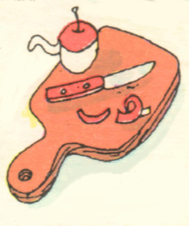

Шевелёва Полина Викторовна.
Шевелёва Полина Викторовна.
Дата рождения:
12 мая 1982 года.
Дата смерти, диагноз/причина:
Не веселый вопрос. Боюсь я смерти. Не своей, не чьей-то, а вообще, как явления. Был человек, сложнейшее "устройство" в природе, и раз, и нет его. Как? Почему? Не понимаю… Поэтому боюсь и пошутить не получается.
Откуда родом / где пенаты:
Родом я из Омска. Но всегда хотела родиться в Финляндии. Характер у меня нордический… ;-)
Адреса для связи (mail, адрес родителей и прочие контактные адреса и телефоны):
Домашний адрес: Заозерная, 9а-57. Домашний телефон: 52-00-35.
Любимый кусочек любимой песни. А так же любимый и не любимый цвета:
Любимые песни так же, как любимые цвета, менялись на протяжении жизни. От черного к красному. От "Чунги-чанги" до Бутусова "Кошка, чашка, муха и лапоть". Также люблю песни из "старых" кинофильмов. Например, "Прекрасное далеко" (Гостья из будущего), "Дон Дублон" (Дон Сезар де Базан).
Научный интерес / тема диплома, ФИО научного руководителя:
Диплом: "Массовое сознание русского крестьянства. 1921-1927 года (по материалам Европейской России)". Научный руководитель: Шепелева Валентина Борисовна.
Понимание смысла жизни (зачем топчет эту землю):
Жить надо ради самой жизни: ради свободы, любви, ради себя, ради любимых людей и зверюшек, ради получения новой информации, ради интересных занятий, ради физических удовольствий, новых ощущений, да, хотя бы просто ради любопытства… Ставя себе цель, стремясь достигнуть лишь ее, человек программирует себя, лишая себя ЖИЗНИ.
Отношение к аборту (это убийство?), смертной казни и эвтаназии:
Теоретически аборт - это убийство. Но практически, по-моему, лучше аборт, чем физиологически и психологически не готовая к материнству "девочка" в роли мамы. Вообще, хорошо бы спонсировать медицинские исследования в этом направлении, дабы свести ВОЗМОЖНЫЕ отрицательные последствия к минимуму, и законодательно обязывать девочек хотя бы лет до 17 делать аборт. Что может дать ребенку мама, которая школу-то не закончила!!!!! (пропаганда предупреждения беременности что-то как-то в России не действует; надеются на русский "авось" что ли????!!!!). Да и молоденькие девочки психологически аборт ЗАЧАСТУЮ легко переносят - беременность воспринимается как болезнь, которую можно вылечить.
К смертной казни отношение резко отрицательное. Как можно обрекать человека на ОЖИДАНИЕ смерти. На мысли о том, что сегодня он еще может видеть, говорить, чувствовать запах цветов, думать, вспоминать какие-то моменты жизни, а завтра в 12:00 он этого уже не сможет. И чем же тогда принципиально отличается "человеческое сообщество", вынесшее смертный приговор, от того преступника?
С эвтаназией сложнее. Лишить жизни смертельно больного человека, наверное, можно, но только если он наверняка не находится в сознании, не видит, не слышит, не понимает происходящего. И нет надежды на выздоровление. Другое дело, если больной, мучаясь от боли и зная, что умрет, сам просит прекратить его мучения. Возникает вопрос, он действительно хочет этого или жалеет родных и близких? Я, по крайней мере, не смогла бы в такой ситуации поставить укол, дать таблетку или что-то там другое.
Понимание большой и чистой любви (совокупляющуюся пару мытых слонов не предлагать):
Надо мной за это многие смеются и говорят, что я, как ребенок, но для меня большая и чистая любовь - вдруг поднять голову и ни с того, ни с сего подумать, какой он красивый, какая милая родинка у него над губой, без причин погладить по руке (ноге, голове и т. д.), делить оставшуюся конфету, стараться именно ему сварить самый вкусный суп, все-все друг другу рассказывать… И вообще, в отношении любимого человека возникает чувство чего-то "близкого", "своего", "родного"…
Брак - это продолжение любви или насилие над ней?
Господи, ну как можно задавать историкам такие вопросы!!! Все относительно и индивидуально. Смотря, какая любовь, и какой брак. Желаемый идеал, конечно, брак как продолжение любви. Если это идеал, не думайте, что он недостижим.
Сколько хочет детей (лично проверю выполнение этого желания :)
Говорят, нормальная баба хочет рожать не один раз. Если появится первый, и будет благоприятствующая ситуация (мужчина, необходимый материальный уровень, физиологическая возможность и т. д.), думаю, появится и второй. Но пока еще (ха-ха, успокоила себя) я баба совершенно не нормальная - пока не хочу ни одного.
Впечатления об учёбе / последних пяти годах жизни:
Все говорят: "Очень счастливое время". Не оригинально, конечно, но я присоединюсь к высказыванию. Однако вспоминается и что-то печальное, причем, чем дальше, тем больше этого печального, спокойного, однотонного. В этом, конечно, Университет не виноват - взрослеем, блин. Как однажды сказала Ксения Лавинова: "Становимся сухими морковками…". Ааааа, что же будет дальше???!!!
Впечатление от курса:
Курс, как курс. Для меня самый лучший, потому что мой. Все что-то говорят по поводу дружности / недружности курса. Да, несколько больших и маленьких групп. И что? Разве несколько десятков самостоятельно мыслящих людей с непохожими интересами могут быть одной дружной кампанией? Но как учебная единица факультета, по-моему, мы достаточно "едины". В Политехе на "космическом" факультете по истечении трех лет многие (!) однокурсники друг друга по имени то не знают (извините за пример, но я, как истинный историк, ;-) должна была привести факты в доказательство).
Самые запомнившиеся моменты жизни, проведённые с сокурсниками:
Из ответа на этот вопрос я исключу, уж простите, воспоминания об абсолютно личных моментах жизни, проведенных с некоторым из сокурсников (они все незабываемы). Цензура (КВП) все равно не пропустила бы… Так вот, конечно, незабываемым был "олимпийский" чих Алексея Бокатова. Даже во сне иногда снится. Чих, в смысле. Запомнила я семинары Ушаковой в группе И-93, когда мы с Натальей Силаевой наперебой охали и вздыхали по различным вопросам. Сергей Косач, постоянно "выпытывающий" мои политические пристрастия. Очень дороги мне беседы и хождения по магазинам с Александрой Урванцевой. Помню я нас с Анной Черкашиной, мокнувших под дождем на пляже летом после первого курса. Всегда с улыбкой я вспоминаю забавные идеи Василия Шишкина. Как-то у меня было отвратительное настроение, но пришел Андрей Выдрин, покопался в сумке со словами: "Где-то у меня тут настроение было…" и достал конфету. Мне стало так хорошо и спокойно. Не забыть, наверное, ночные звонки Ирины Требтау (в ночь перед экзаменом), обсуждение, кому, сколько еще прочитать за оставшиеся 12 часов. Да, и сама подготовка к экзамену в последнюю ночь, и на следующий экзаменационный день разбежавшиеся по черепной коробке мозги (прошу прощение за интимные подробности) - тоже оставили свой след в памяти. И как же я могу не сказать про Михаила Шаповалова. Он всегда останется одним из самых "часто вспоминаемых" для меня людей. Особенно я помню постоянное письменное общение с Михаилом на лекциях Черепанова К. В., сопровождаемое пристальным взглядом Константина Владимировича. Как-то раз стояла я в компании девочек у аудитории перед звонком, подошел Мишка и сказал: "Здравствуйте, девушки. Здравствуй, Полина". Взрыв хохота. Евгения Бежан уточнила для тех, кто не понял: "Либо Полина уже не девушка, либо к ней особое отношение"!!! Ха-ха. Люблю я Мишку!!! Примерно такой же случай был и с Лёшей Бокатовым. Люблю я Лёшку!!!
Глубоко впечатлило и опечалило меня расформирование группы И-93 (как видите, не только радужные воспоминания). "Вхождение" в группу И-92 проходило … э-э-э… не спокойно. Это одна из вещей, за которые я хотела бы извиниться. Извините... А 92 группа оказалась очень даже милой и пушистой. :-)
Любимый "прикол" во время обучения:
Мне почему-то очень запомнилась "фантастическая, если не сказать фантасмагорическая, "Книга о вкусной и здоровой пище" Евгения Николаевича Ефименко.
Любимая вредная привычка:
Моя нелюбимая вредная привычка - жить привычками и бояться резких изменений в жизни. А любимая - сладкое и … соленые огурцы. По отдельности.
Любимое ругательство (у кого ИХ нет - депортируем как врага народа):
В разных ситуациях, разумеется, разные. Мне очень понравилось "идиотики" Эльдара Кадикова. Я теперь часто говорю: "гадики".
Как воспринимает себя:
Алексей Бокатов говорит, что я "девочка-вихрь". Соглашусь.
Я всегда бегаю и прыгаю по коридорам, особенно в "Пушке"…
О чём жалеет, что сделала / не сделала за эти пять лет:
Я жалею о том, что делала и потом это не исправляла. Хотя, как это можно было исправить…, разве, что частичной зачисткой памяти. За "вхождение" в группу И-92 я уже извинялась. Еще, наверняка, следует пожалеть о "плохом поведение" в отношении Михаила. Жалею.
Главная слабость (перед чем не может устоять):
Моя слабость - умеющие красиво и "умно" говорить мужчины (не путать с пьяным трепом). :-)))
Планы (не больше трёх страниц :)
С этим проблемы. Я же говорю, что во многом живу привычками и боюсь будущего. Хотя, можно сказать в планах совершенствование, физическое, психологическое и любое другое…
Описание некоторых сокурсников:
По отношению к разным людям у меня возникают разные ассоциации.
Урванцева Александра:
Шишкин Василий:
Косач Сергей:
Черкашина Анна:
Фомичев Василий:
Бокатов Алексей:
Квашнин Владислав:
Никифорова Елена:

Требтау Ирина:

Пожелания сокурсникам:
Пусть "прекрасное далеко" не будет к Вам жестоко!!!!!!!!!!!!!!!!!!!!!!!!!!!!! :)